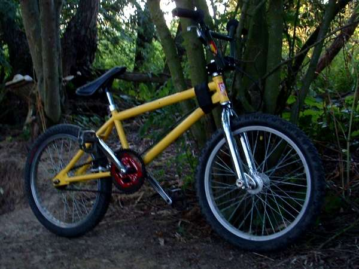
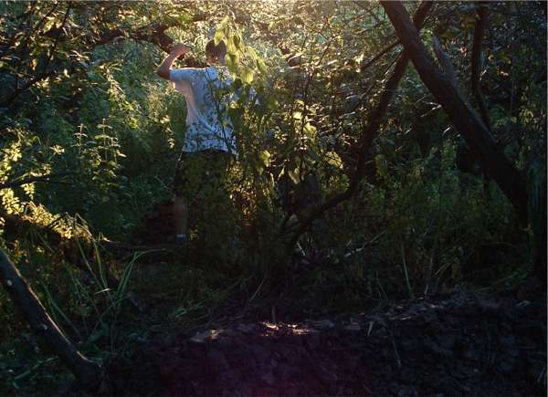
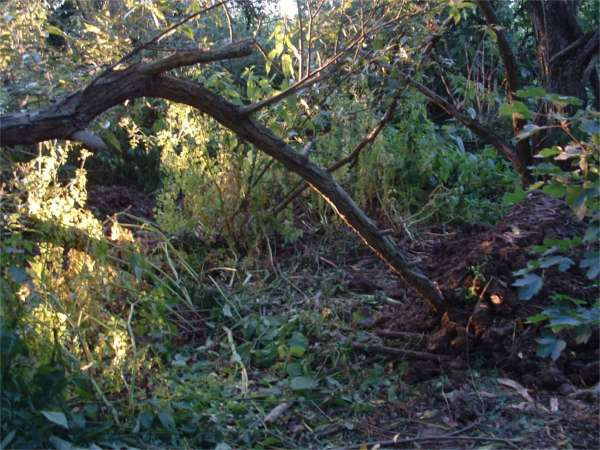
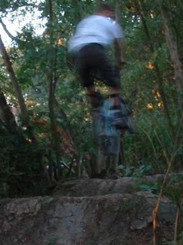

this is my new bike. it's old school - 1in. steerer, 80's style redline
chainring. can anyone give me any hints on setting up u-brakes cos i messed this
one right up.




thought i had better slip a riding picture in here even if it's blurred. bmx is good for trails and park. it feels lke you have more time to do stuff.the trails really need some rain, and a good few days solid buidling, but we are getting things done slowly in the evenings.
we are going the plant a big hedge around the trails to keep them as hidden as possible. apparently you have to wait until autumn to plant hedges. it feels like the summer is going way too fast.